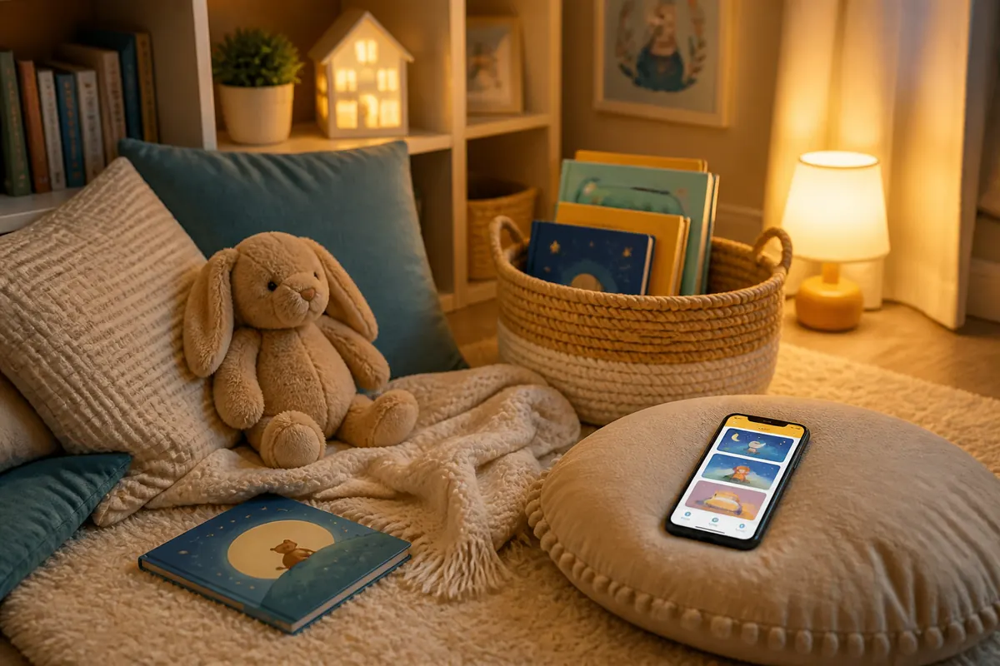

You do not need a perfect reading nook or a long bedtime routine. Toddlers are more likely to return to storytime when the setup feels familiar, the choices are limited and the ending is kind. Think of this as a small family rhythm you can use before bed, after lunch, during quiet time or whenever the day needs a reset.
This guide focuses on the environment and routine. For page-by-page read-aloud techniques, use our practical guide to reading aloud to toddlers.
1. Choose one storytime place
Pick a chair, corner of the sofa or floor cushion that you can use most days. It does not have to be elaborate. The point is to give storytime a visible home so your toddler can begin to recognise the cue.
- Use a comfortable seat or mat that is easy to reach.
- Reduce nearby noise and put distracting toys just out of reach.
- Keep a small comfort object nearby if your child likes one.
2. Make a tiny story basket
Keep two or three books in the basket rather than displaying the whole shelf. Include one reliable favorite, one seasonal or everyday story and one book your toddler has not seen recently. Rotate them when interest fades.
3. Use the same three-part rhythm
A predictable rhythm makes the routine easier to begin. Try: invite, share, close. Invite your toddler to the reading spot, share one short story or a few pages, then close with the same warm phrase or cuddle.
- Invite: “It is storytime. Do you want the bear book or the bunny book?”
- Share: read, look at pictures or let your toddler hold the book.
- Close: “The story is finished. We can read again tomorrow.”
4. Offer two choices, not an open shelf
Hold up two books and let your toddler choose. This gives them a sense of control without making the whole reading shelf available. If they choose the same favorite again, keep it in the rotation; familiarity is part of the comfort of a routine.
5. Match the routine to the part of the day
Storytime does not have to mean bedtime. After lunch, use brighter books and allow more movement. Before a nap or sleep, lower the lights, choose a familiar story and keep the ending short. During a difficult transition, use one book as a bridge between activities.
6. Make room for movement
A toddler may stand, point, walk over to a toy or listen from the edge of the room. Decide what “participating” can look like for your child, and keep the routine flexible enough to include it. You can always pause and return later.
7. End while the routine still feels good
Stop after one page, one book or five minutes if that is what your toddler can manage today. Use the same closing cue—a wave, cuddle or “see you next time”—so the ending feels predictable rather than abrupt.
8. Refresh the basket, not the whole routine
If storytime is losing its spark, change one book, move the basket or try a different time of day. Keep the beginning and ending familiar while allowing the middle to change with your toddler’s interests.
FAQ: Toddler storytime questions parents ask
How long should toddler storytime last?
Start with five to ten minutes and adjust to your child’s mood. Some days it may be one page; other days it may be two short books. The routine is successful when it stays relaxed and repeatable.
What should go in a toddler story basket?
Keep two or three sturdy books, including one familiar favorite, plus a small comfort object or simple prop connected to a story. A small selection makes choosing easier.
How can I fit storytime into a busy schedule?
Attach reading to an existing habit, such as after snack, post-bath, or before nap. Even five consistent minutes build a ritual your toddler will anticipate and request.
What if my toddler will not sit still for storytime?
Let your toddler move, listen from nearby or return for a page at a time. A flexible routine is more useful than expecting a motionless child.

Make every story an adventure with Baboo Stories
Baboo provides story text for parents to read aloud. You can add your own questions, voices and movements; those choices belong to your family, not an automatic performance in the app.
Baboo Stories is a calmer bedtime story app for parents who want to read, bond, and help toddlers wind down with gentle read-aloud stories.
Further reading: NAEYC on reading aloud with infants and toddlers.